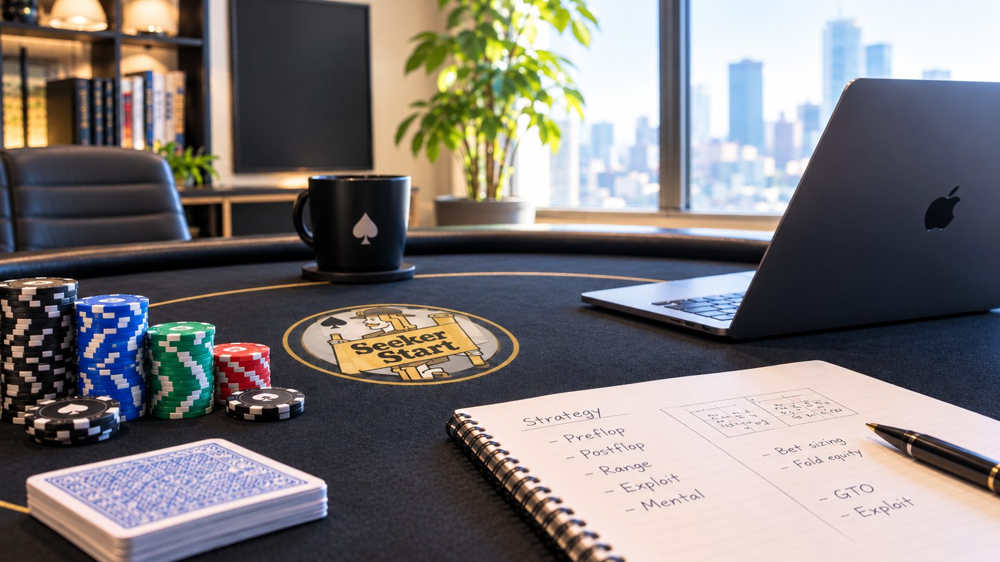
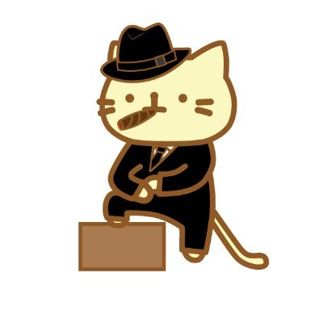
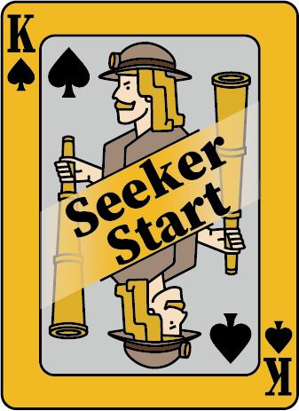

一第1回〜第3回
考える。
アクションには、理由がある。
相手のレンジを絞り込み、その相手に対してどのようなアクションが有効なのかを考える。実戦で必要となる思考プロセスを身につけます。

そのアクション、
理由まで説明できますか？
考え方から身につける、キャッシュゲームのコーチング
ABOUT
動画や記事で戦略を学んでも、実戦では何となくベットしてしまう。
GTOを勉強したいけれど、難しくて何から手をつければいいかわからない。
Seeker Startのコーチングでは、そんな悩みに向き合い、第1〜3回で実戦に必要な思考プロセスを学び、感覚頼りのプレーからの卒業を目指します。
補講2回では、GTOや戦略教材を自分で読み解き、学習を進める方法を習得。
終わりの見えない勉強ではなく、学ぶべきことを整理し、自分の力で成長していくための道筋をつくります。
PROBLEMS
動画などでポーカーの戦略に関する概念やtipsは知ったが、実戦とイマイチ結び付けられていない。
Preflopは覚えたが、flop以降でプレイに関する明確な指針がない。
自分のプレイが正しかったのかどうか具体的に検証するのが難しいと感じる。
Flopのこのboardはとりあえずレンジ33%でCBというような意思決定をしている。
自分のアクションをGTO戦略と照らし合わせて正解不正解を判断している。
GTO戦略を学習し始めたが、何に注目して勉強すればいいかわからない。
コンセプト
自分のアクションを選んだ理由を、
自分の言葉で説明できるプレイヤーへ。
一第1回〜第3回
アクションには、理由がある。
相手のレンジを絞り込み、その相手に対してどのようなアクションが有効なのかを考える。実戦で必要となる思考プロセスを身につけます。
二補講1・補講2
戦略の背景にある理論を知る。
ポーカー算数やtoy-gameを通じて、戦略が成り立つ仕組みを学ぶ。実戦での判断を支える知識を深めます。
三コーチング終了後
自分で考え、自分で上達する。
自身のプレーを振り返り、課題を見つけ、次の実戦に活かす。コーチングが終わった後も、自分の力で学び続けられることを目指します。
カリキュラム
基本講義3回と補講2回。1講義約2時間で、どの講義も単発で受講できます。
考える。
基本講義・全3回
前の回で学んだことを土台に、PreflopからRiverへ、さらにまだ見ていない場面へと、考える範囲を広げていく3回です。
この講義のゴール
PreflopからFlopを跨いでレンジを絞り込み、相手のレンジに対するアクションを、バリューとブラフの概念で判断できる。
学ぶ内容
身につけたい考え方
ハンドの強さは、役の名前では決まらない。
相手のレンジの中の、どれくらいの割合に勝てているかで決まる。
相手のハンドを1つに当てにいくのではなく、持ちうるハンドの集合（レンジ）として考える。
この講義のゴール
相手のレンジと戦略を推定し、それに対して最もEVの高いアクションを選べるようになる。
学ぶ内容
身につけたい考え方
EVは、自分と相手の戦略の組み合わせで決まる。
同じハンドでも、相手の戦略が違えば最善のアクションも変わる。
講義で使う、5つの思考プロセス
この講義で目指すこと
観測した行動から相手の行動原理を推測し、まだ見ていない別の場面にまで読みを広げる。
学ぶ内容
身につけたい考え方
見えた行動の一つひとつを、相手の考え方を知る手がかりとして捉える。
深める。
補講・全2回
基本講義とは別に用意している講義です。こちらも単発で受講できます。
補講1
学ぶ内容
ポーカーに関わる算数と発展概念を学ぶ。
補講2
学ぶ内容
単純化したモデルを通じて、ポーカーの戦略の本質を学ぶ。
METHOD
講義で概念を学び、練習問題と実践演習で使えるようにする。1回約2時間の流れです（第1回の例）。
講義・前半
アクションによって期待値が異なる。アクション選びの第一歩を学びます。
講義・後半
見えない相手のハンドを、持ちうるハンドの集合（ハンドレンジ）で考えます。
実践
実際の場面で、レンジの絞り込みとアクション判断を行います。
宿題
講義で紹介した6つのレンジを、次回までに覚えます。
これは「正解を当てる」演習ではありません
前のストリートから、相手のハンドレンジを想定する
ハンドレンジとボードを見比べ、相手にどんな役やドローがあるかを分類する
ベットしたとき、何がコールして何がフォールドするかを考える
その想定でバリューやブラフが機能するかを、自分の言葉で説明することを大切にしています。
第1回のゴール
プリフロップからフロップを跨いでレンジを絞り込み、相手のレンジに対するアクションをバリューとブラフの概念で判断できる。
WHY SEEKER START
ポーカー学習には、3つの壁があります。
壁 01
どの情報が正しいか、どこから学べばいいかが示されていない。
Seeker Startでは
基礎的な概念を体系的に。学ぶ順番が決まった全3回＋補講2回のカリキュラムで進めます。
壁 02
学習イベントやコーチングはハンドレビュー中心。自分でレビューするための原理原則は教わりにくい。
Seeker Startでは
自分でハンドを振り返るための原理原則から学びます。鉄強会を100回以上やって分かった、初心者のつまずきポイントも押さえます。
壁 03
時間単価が高額。何時間でどれくらい上達できるかも不明瞭。
Seeker Startでは
5回 × 約2時間 ＝ 約10時間で卒業。1回15,000円（税込）の都度払いで、受けたい回だけ選べます。
誰もが気軽に、原理原則から学べる環境をつくります。
AFTER COACHING
プレイが終わったら、振り返る。そのための問いと場所を用意しています。
振り返りの2つの問い
月2回くらい開催。一人でのレビューが難しいときは、一緒にハンドレビューできます。
プレイした全てのハンド履歴を、後からゆっくり確認できます。
COACH
紹介動画（準備中）

【肩書き：準備中】
【プロフィール文：準備中】
PRICE
まとめて受講する場合の目安
考える。
第1回〜第3回
45,000円（税込）
深める。
補講1・補講2
30,000円（税込）
すべて
全3回＋補講2回
75,000円（税込）
※ 1回ごとのお支払いです（15,000円 × 受講回数）。
FLOW
受けたい回や、いまの悩みをLINEでお気軽にお送りください。
LINEで日程を調整し、お支払い方法をご案内します。
日程が決まったら、コーチングを開始します。
FAQ
はい。ルールを把握していれば大丈夫です。レベルに合わせて進め方を決めます。
はい。第1〜3回・補講1〜2のどの回も、単発で選んで受講できます。
PayPay または 現金でのお支払いです。料金は1回（約2時間）15,000円（税込）で、1回ごとの都度払いです。
オフライン（対面）・オンラインのどちらでも受講できます。
オフライン：場所はお申し込み後に調整します。
オンライン：お客様のご希望のツールで行います。
受講予定日時の24時間前まで、キャンセル・日程変更が可能です。公式LINEからご連絡ください。

CONTACT
公式LINEを友だち追加して、気軽にご相談ください。
オンライン・対面どちらも対応しています。